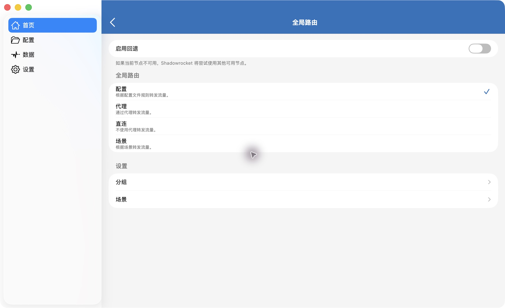

启用「配置」模式
- 导入任一
.conf并点击启用（出现 ✓ 标记）。 - 按需在「配置 → 模块」中添加去广告或企业 VPN 模块。
- 回到首页选择可用节点，将全局路由设为「配置」。


MODULAR CN ROUTING / 2.0 架构
面向中国大陆日常使用的现代化 Shadowrocket 模块化配置。支持单文件离线版与 Git 自动更新低内存版，按需叠加去广告与企业 VPN 插件。
共用同一套清洗规则与离线回归测试
| 版本 | 适用场景 | 下载链接 |
|---|---|---|
| 在线版 · 推荐 | 内联规则不到 200 条，大表经 DOMAIN-SET 加载，内存占用最低 | Shadowrocket-CN-Smart-Online.conf |
| 在线策略组版 | 在线版 + 26 个策略组，可为 AI、流媒体等单独选节点 | Shadowrocket-CN-Smart-Group-Online.conf |
| 离线版 | 单文件内置 3.3 万条规则，无远程依赖 | Shadowrocket-CN-Smart-Offline.conf |
| 离线策略组版 | 离线版 + 26 个策略组 | Shadowrocket-CN-Smart-Group-Offline.conf |
.conf 并点击启用（出现 ✓ 标记）。